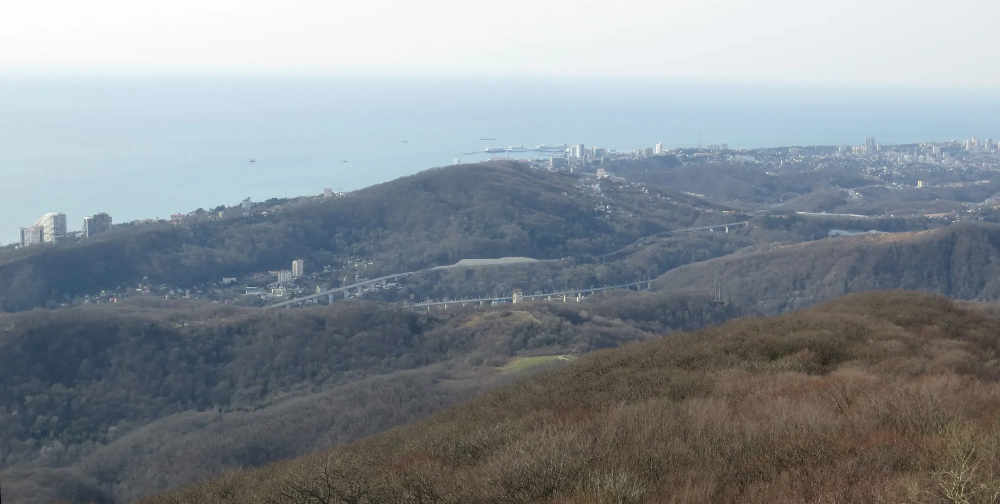
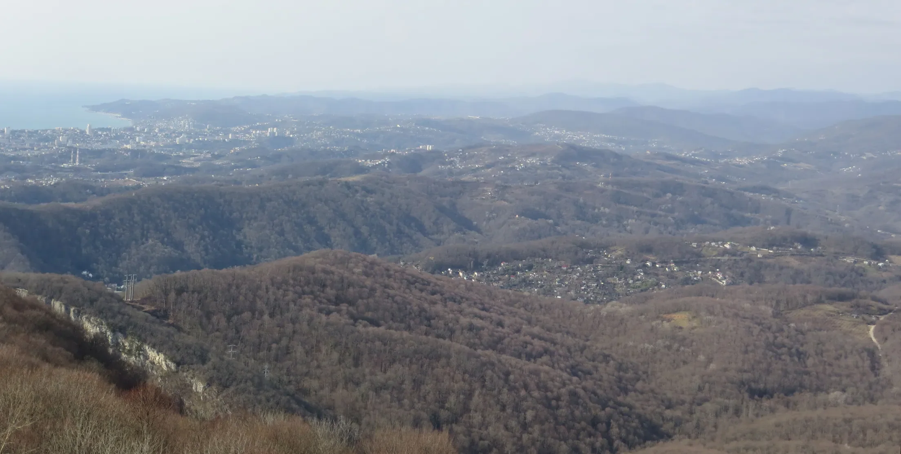
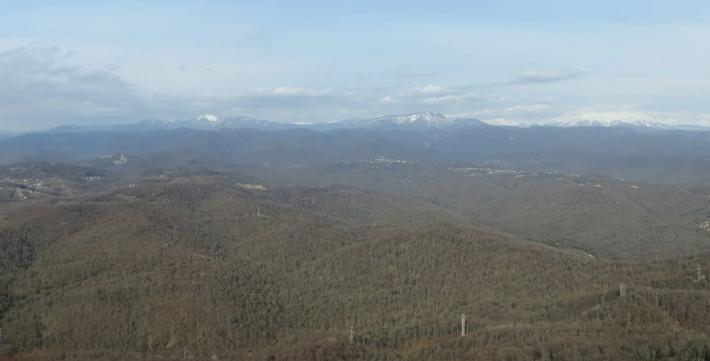
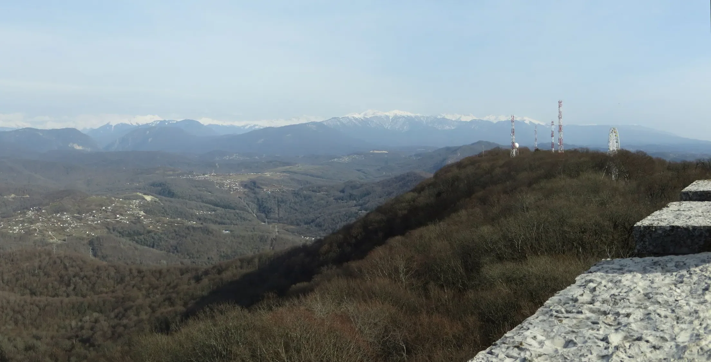
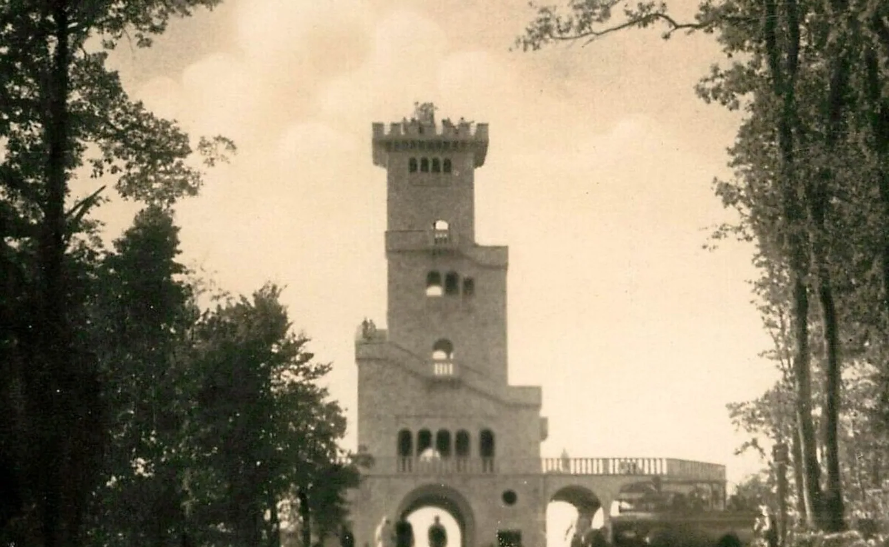
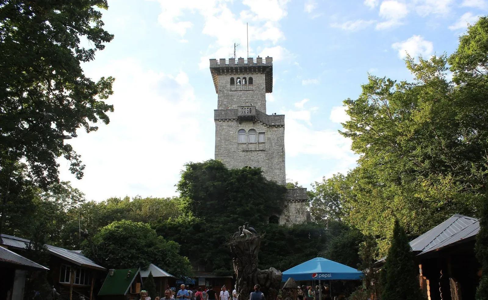
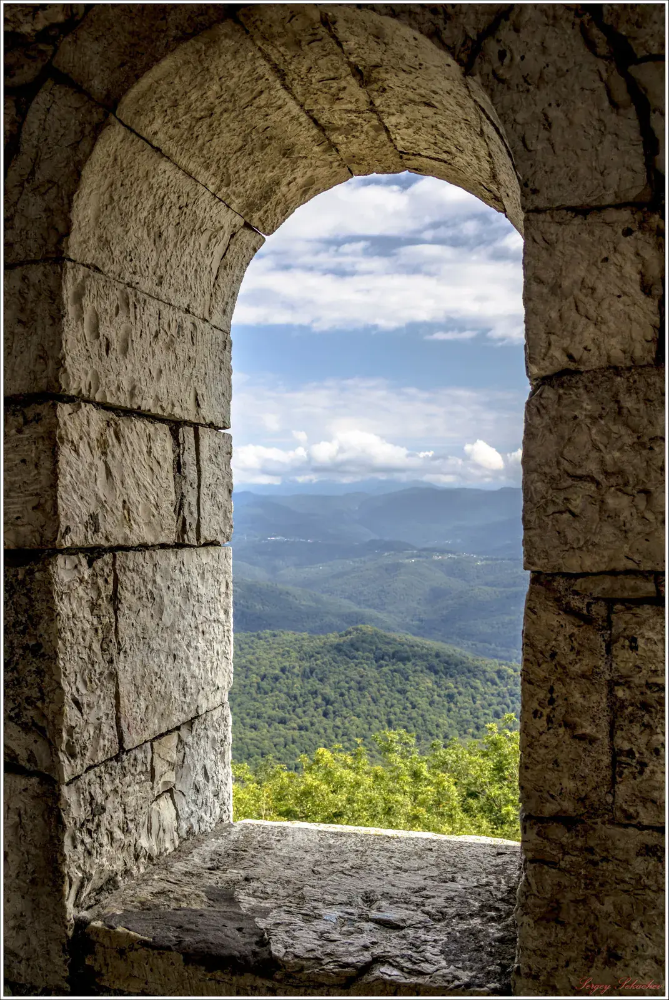

Глава пятая
1936
Гора Ахун
Сначала в гору проложили дорогу, потом на вершине поставили башню, чтобы море и горы были видны сразу.
Смотровая башня Большого Ахуна

Вершина Большого Ахуна, 663 метра над морем. На горизонте — снежные хребты Кавказа
Фото: Евгений Лодянов, 2017, CC BY-SA 4.0


10,6 км


- Сочи, уровень моряЛистайте: поднимемся на Большой Ахун
- Дорога Агура — Ахун, около 12 километровЕё проложили за 117 дней: со 2 января по 29 апреля 1935 года
- Вершина, 663 метра. Дальше — лестница башни, 30,5 метраВерхние марши закрыты со всех сторон: по дороге наверх вида почти нет
- Площадка, около 690 метров над моремПанорама открывается сразу вся. Нацпарк объясняет это замыслом архитектора
- На запад: море, порт и центр СочиДо Морского вокзала (глава 7) 10,6 км по прямой, до Зимнего театра (глава 6) — 9,5 км
- На северо-восток: хребты Кавказа, в феврале — в снегуДо Красной Поляны (глава 9) 32,5 км по прямой, до Роза Пика (глава 10) — 38,5 км
- Отсюда видно, как устроен курортУзкая полоса города зажата между морем и горами
Панорамы: Tohuchar, 2014 (запад, северо-восток), CC BY 3.0; подписи мест приблизительные
Башня похожа на средневековую сторожевую, но её строили не для обороны, а для взгляда: отсюда курорт виден целиком.
Что это
Смотровая башня над курортом
Большой Ахун — гора высотой 663 метра, примерно в десяти километрах от центра Сочи. На вершине стоит каменная башня высотой около тридцати метров, похожая на средневековую сторожевую.
Это смотровая площадка: с неё видны море, побережье и снежные хребты Кавказа. Башню построили в 1935–1936 годах как часть государственного плана, по которому Сочи превращали в курорт для всей страны.
- Где
- Вершина Большого Ахуна, Хостинский район Сочи
- Высота горы
- 663 м над уровнем моря
- Высота башни
- 30,5 м
- Построена
- 1935–1936
- Архитектор
- С. И. Воробьёв
- Материал
- Местный белый известняк
- Охрана
- Памятник архитектуры федерального значения
- Сейчас
- Закрыта на реконструкцию (сайт нацпарка, октябрь 2026)
Как это появилось
Сначала дорога, потом башня
XI–XII века
Гору знали задолго до башни. На её склонах около двадцати пещер: Ахун — массив. На соседней вершине, Малом Ахуне, сохранились остатки христианского храма; храмы этого массива относят к XI–XII векам. Откуда название, достоверно неизвестно: предлагают абхазское слово «аху», «возвышенность», или имя адыгского божества Ахына, покровителя скота.
1925 и 1933
В 1925 году Сочи получил статус курорта общегосударственного значения, а в 1933 году правительство утвердило первый Сочи-Мацестинского курорта. Стройку объявили , для неё создали особое управление уполномоченного ЦИК СССР. Небольшой город превращали в здравницу для всей страны.
2 января — 29 апреля 1935
Сначала нужна была дорога: до 1935 года на гору поднимались только пешком. Дорогу Агура — Ахун длиной около 12 километров проложили меньше чем за четыре месяца, за 117 дней. Так записала правительственная комиссия в отчёте 1936 года: её слова приведены ниже, в разделе документов.
1935–1936
Проект башни выбирали быстро: по словам нацпарка, группа архитекторов за десять дней представила несколько вариантов, утвердили проект Сергея Воробьёва. Башню сложили из местного белого известняка. Автор называл её «сооружением в романском стиле, с переходом к раннему итальянскому», то есть это . Сроки стройки источники называют по-разному: 108 дней (нацпарк) или десять месяцев (Википедия).
1936–2026
Почти девяносто лет башня служит смотровой площадкой: на снимках 1930–1960-х к ней подъезжают экскурсионные автобусы. Сейчас это . По сообщению нацпарка, в октябре 2026 года башня закрыта на реконструкцию: перед поездкой проверьте, открыта ли она.


1937–1938: вокруг башни открытая площадьЛистайте: снизу поднимется снимок 2017 года с той же точки
Деревья выросли и закрыли нижний ярус
Но вид с площадки открыт: высоту башни выбрали с запасомТак замысел объясняет Сочинский национальный парк
1937–1938: Н. Н. Астафьев, открытка «Союзфото», PastVu № 1848810. 2017: Наталья Лексукова, CC BY-SA 4.0. Совмещено по верху башни

Надпись у входа
«Башня на горе Ахун построена в 1936 году на высоте 663 м над уровнем моря по проекту архитектора С. И. Воробьева».
- Что сказано
- Год постройки, высота и автор проекта.
- Как понять
- 663 метра — высота вершины, а не башни. Сама башня около 30,5 метра, поэтому площадка находится примерно на 690 метрах над морем (расчёт).
- Чем проверено
- Имя архитектора есть в реестре памятников, высота вершины совпадает с картами.
Ещё один документОтчёт правительственной комиссии, 1936
Отчёт правительственной комиссии, 1936
«До постройки дороги на гору Охун можно было подняться только пешком и то с большим трудом, преодолевая крутые подъемы и заросли. Строительство дороги Агура — Охун, начатое производством 2 января 1935 г., в основном было закончено 29 апреля того же года в ударном порядке в установленный срок».
- Охун
- Так гору писали в 1930-е годы.
- Ударный порядок
- Язык эпохи: стройку ставили в первую очередь и сжимали сроки. От 2 января до 29 апреля — 117 дней.
1935
«Строительство дороги Агура — Охун, начатое производством 2 января 1935 г., в основном было закончено 29 апреля того же года…»
Отчёт правительственной комиссии о строительстве 1934–1935 годов в Сочинском районе
Архив и сегодня
Башня за девяносто лет
На что посмотреть
Четыре детали на вершине
Окна, которые не дают смотреть
Фигурные окна большие, чтобы можно было выглянуть, но узкие, чтобы ограничить обзор. Верхние лестничные марши закрыты со всех сторон. По объяснению нацпарка, это сделано ради эффекта неожиданности: панорама открывается только на площадке.
Зубцы наверху, арки внизу
Зубцы по верху, как у крепости, толстые стены и узкие окна с полукруглыми арками — приметы романского стиля. Сравните с колоннами Зимнего театра (глава 6): его строили в те же годы по тому же плану, но совсем в другом образе.
Кованые решётки
Решётки на лестничных проходах сделал сочинский скульптор П. П. Рочняк. Их легко пропустить по пути наверх.
Что где лежит
По прямой от башни: Морской вокзал — 10,6 км на запад, Зимний театр — 9,5 км, Тисо-самшитовая роща — 3,7 км на юго-восток, Олимпийский парк — 18,9 км, Красная Поляна — 32,5 км на северо-восток, Роза Пик — 38,5 км. Расстояния посчитаны по координатам.
Значение для Сочи
Отсюда видно, как устроен город: узкая полоса застройки зажата между морем и горами.
Значение для России
Влажные субтропики у подножия гор выше трёх тысяч метров есть в стране только здесь: в соседнем Кавказском заповеднике вершины поднимаются до 3346 м (гора Цахвоа, по Википедии). Курорт для всей страны строили там, где рядом море, тепло и горы.
Раздел курса: 2. Российское государство-цивилизация
Ценность: созидание и развитие

Факт, который мало кто знает
«Средневековая» башня моложе ста лет. Её называют редким примером советского неороманизма: романский стиль в России строили редко, а в Сочи 1930-х годов строили колонны и портики сталинского неоклассицизма.
Окно башни. Фото: Сергей Секачёв, 2016, CC BY-SA 3.0
Что вы узнали
Три вещи о башне на Ахуне
Сначала дорога, потом башня
Башню построили в 1935–1936 годах как часть государственного плана курорта: сначала за 117 дней проложили дорогу, потом возвели смотровую башню по проекту Сергея Воробьёва.
Ударная стройка
Эти слова описывали способ управления: деньги, материалы и рабочих направляли на стройку в первую очередь, а сроки сжимали. Для всего курорта создали отдельное управление при ЦИК СССР.
Молодая старина
Башня выглядит средневековой, но ей меньше ста лет. Её неороманский стиль для России необычен.
Проверьте себя На плите у входа написано «на высоте 663 м». Это высота башни?
Нет. 663 метра — высота вершины горы над морем. Сама башня около 30,5 метра, поэтому площадка находится примерно на 690 метрах.
Источники главы Статьи, документы и авторы снимков
- Башня на горе Большой Ахун. Сочинский национальный парк.
- Ахун (гора); История Сочи; Историзм в России. Википедия.
- Отчёт правительственной комиссии // «Реконструкция курорта Сочи — Мацеста». М., 1936. Цитата по PastVu № 2102557; сам отчёт мы не видели.
- Культурное наследие России: Сочи, Хостинский район. Викигид: башня, 1935–1936, архитектор С. И. Воробьёв, федеральный памятник.
- Архивные снимки PastVu: № 2102557, № 1848810, № 2382361, № 456548, № 590598; воспроизведены как учебная цитата.
- Современные снимки (Викисклад): Евгений Лодянов, 2017 и 2018, CC BY-SA 4.0; Tohuchar, 2014, CC BY 3.0; Наталья Лексукова, 2017, CC BY-SA 4.0; Insider, 2015, CC BY-SA 4.0; Сергей Секачёв, 2016, CC BY-SA 3.0; Rubashevskiy, 2014, SKas, 2015, Илья Бунин, 2017, CC BY-SA 4.0.